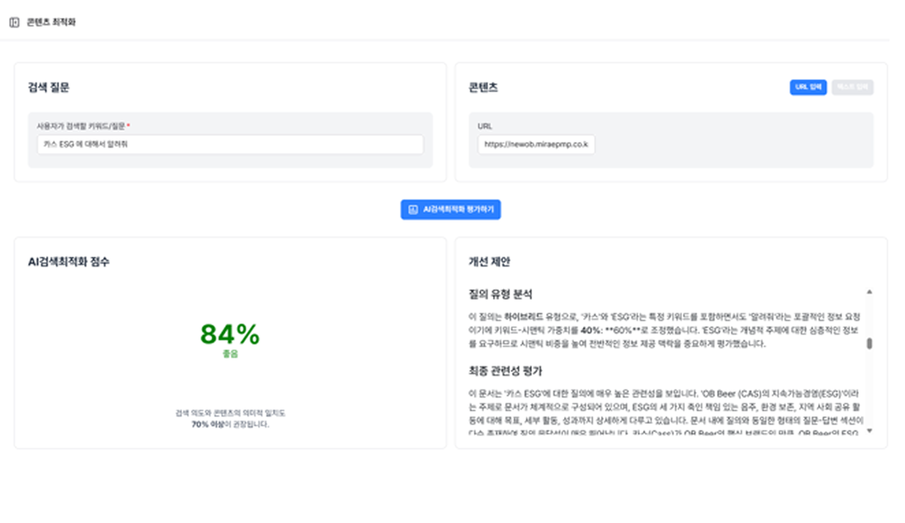
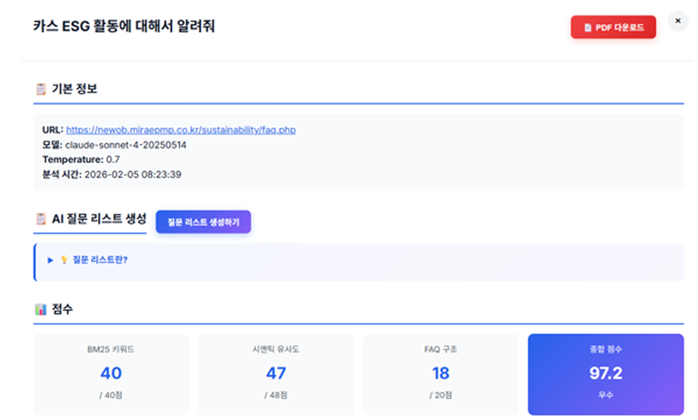

OB맥주 FAQ 페이지
OB맥주 홈페이지 내 FAQ 페이지를 신규 구축한 프로젝트로, 단순한 페이지 제작을 넘어 SEO 및 AEO를 고려한 콘텐츠 구조 설계에 집중했습니다.
- 프로젝트 유형
- FAQ 페이지 신규 구축
- 핵심
- SEO · AEO 콘텐츠 구조
- 담당 범위
- 구조 설계 · 마크업 · 이미지 최적화
- 성과
- SEO 품질 점수 95점 이상
담당 업무
사용자의 검색 의도를 반영한 질문-답변(Q&A) 형식으로 콘텐츠를 구성하고, 검색엔진 친화적인 마크업을 적용해 검색 노출과 정보 탐색 효율을 함께 높이는 방향으로 작업했습니다.
-
FAQ 콘텐츠 구조 설계
사용자 검색 의도를 반영한 질문-답변(Q&A) 구조를 설계하여, 필요한 정보를 빠르게 찾을 수 있도록 콘텐츠 흐름을 구성했습니다.
-
SEO / AEO 최적화 마크업 적용
검색엔진 친화적인 시맨틱 마크업과 메타 정보 구성을 통해 검색 노출 효율을 높이고, AI 검색 환경에서도 인용 가능한 구조로 정리했습니다.
-
신규 페이지 퍼블리싱
OB맥주 홈페이지 톤앤매너에 맞춰 FAQ 페이지를 신규 구축하고, 다양한 디바이스에서 자연스럽게 동작하도록 화면 구조를 구현했습니다.
-
이미지 최적화 및 네이밍 전략
이미지를 WebP 포맷으로 변환해 용량을 최적화하고, 이미지 설명 기반 네이밍을 적용해 검색엔진 및 AI의 문맥 인식까지 고려했습니다.
-
검색 성과 검증
SEO 품질 점검을 통해 95점 이상의 평가 점수를 달성하고, 실제 AI 검색 결과 노출까지 확인했습니다.
주요 코드
제목을 누르면 열립니다. 실제 운영 파일 대신 핵심 구현 방식을 일반화한 예시 코드이며, 사내 식별자·도메인·업로드 경로는 대표 예시로 바꿨습니다.
헤더 공통 SEO · 스키마 구성 PHP 페이지 유형에 따라 FAQ 스키마를 분기 출력해, 각 페이지 목적에 맞는 구조화 데이터가 자동으로 적용되도록 구성
<?php if (isExact('/about/faq.php', $N)): ?>
<script type="application/ld+json">
{
"@context": "https://schema.org",
"@type": "FAQPage",
"name": "기업 및 브랜드 FAQ",
"mainEntity": [
{ "@type": "Question", "name": "회사는 어떤 배경에서 시작되었나요?" },
{ "@type": "Question", "name": "기업 비전과 슬로건은 무엇인가요?" }
]
}
</script>
<script type="application/ld+json">
{
"@context": "https://schema.org",
"@type": "BreadcrumbList",
"itemListElement": [
{ "@type": "ListItem", "position": 1, "name": "홈", "item": "https://example.com" },
{ "@type": "ListItem", "position": 2, "name": "FAQ", "item": "https://example.com/about/faq.php" },
{ "@type": "ListItem", "position": 3, "name": "기업·브랜드", "item": "https://example.com/about/faq.php" }
]
}
</script>
<?php elseif (isExact('/sustainability/faq.php', $N)): ?>
<script type="application/ld+json">{ "@type": "FAQPage", "name": "지속가능경영(ESG) FAQ", ... }</script>
<script type="application/ld+json">{ "@type": "BreadcrumbList", ... }</script>
<script type="application/ld+json">{ "@type": "CollectionPage", ... }</script>
<?php endif; ?>FAQ 시맨틱 마크업 + 구조화 데이터 결합 HTML 질문/답변을 Question · Answer 구조화 데이터와 함께 설계해 검색엔진이 문답 맥락을 명확히 이해하도록 구성
<article
class="faq-item"
itemscope
itemprop="mainEntity"
itemtype="https://schema.org/Question"
>
<div
class="faq-question"
onclick="toggleFaq(this)"
tabindex="0"
role="button"
aria-expanded="false"
>
<h3 class="faq-h3" itemprop="name">
지속가능경영을 어떻게 실천하고 있나요?
</h3>
</div>
<div
class="faq-answer"
itemscope
itemprop="acceptedAnswer"
itemtype="https://schema.org/Answer"
>
<div class="faq-answer-content" itemprop="text">
... 답변 콘텐츠 ...
</div>
</div>
</article>질문/답변형 시맨틱 마크업 구조 HTML h2 → h3 헤딩 계층과 Question · Answer 스키마를 함께 적용해 AI 엔진이 콘텐츠 맥락을 정확히 파악하도록 구성
<main class="faq-page">
<section id="company-history" class="faq-section" aria-labelledby="company-heading">
<div class="section-header">
<h2 class="faq-h2" id="company-heading">회사소개 · 역사 · 연혁</h2>
</div>
<div class="faq-container">
<article class="faq-item"
itemscope
itemprop="mainEntity"
itemtype="https://schema.org/Question">
<div class="faq-question" role="button" aria-expanded="false">
<h3 class="faq-h3" itemprop="name">
회사는 어떤 배경에서 시작되었나요?
</h3>
</div>
<div class="faq-answer"
itemscope
itemprop="acceptedAnswer"
itemtype="https://schema.org/Answer">
<div class="faq-answer-content" itemprop="text">
... 답변 콘텐츠 ...
</div>
</div>
</article>
</div>
</section>
</main>WebP 이미지 + 설명형 대체텍스트 HTML 이미지 최적화와 검색 문맥 인식을 함께 고려해 WebP와 설명형 alt · title 네이밍을 적용
<img
src="/assets/img/faq/sustainable-grain-harvest.webp"
alt="지속가능한 원료 조달을 위해 곡물을 수확하는 농업 현장 모습입니다."
title="지속가능한 원료 조달을 위한 곡물 수확 현장"
/>
<img
src="/assets/img/faq/river-cleanup-volunteer-activity.webp"
alt="임직원들이 하천 주변을 걸으며 쓰레기를 수거하는 환경 정화 봉사활동 모습입니다."
title="하천 환경 정화 단체 봉사활동 현장"
/>AI 최적화 점수 자료
FAQ 콘텐츠 구조 개선 및 SEO/AEO 적용 이후 AI 최적화 분석 도구 기준 점수 결과입니다.


주요 성과
- SEO 및 AEO를 고려한 FAQ 콘텐츠 구조 설계 및 신규 페이지 구축
- 검색 의도 기반 Q&A 구성과 검색 친화적 마크업 적용
- 이미지 WebP 변환 및 설명형 파일명 적용으로 성능 · 검색 친화성 강화
- SEO 평가 점수 95점 이상 달성
- AI 검색 결과 노출 사례 확보로 SEO · AEO 최적화 성공 사례 도출